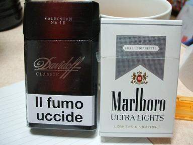
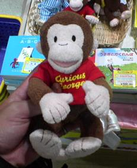
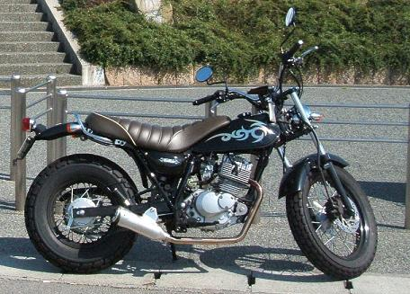

日々、想ふ
〜過去感じたことがつれづれと〜
（できるだけ最大化してお読みください）
日々、想ふ
もっと細かく言っとけばよかった。７/１５
昨日の女子バレーは日本対オランダでしたね、
オランダの注目選手の紹介やってたテレビ番組で
フールマンっていうセッターの紹介をしてました。
フール(馬鹿な)マン(男)て。
フールマンは女の人でセッターですよ、
この話が昨日日記に書こうとして書けなかった話です、
面白いですよねフールマンですよフ−ルマン、タケユキです。
今日おかんが米とか送ってくれたみたいで
明日土曜の午前中に届くみたいです。
昨日メールで食べ物がないって言っといたから
たぶんお米のほかにいろいろ入れといてくれるはず。
これでなんとかいわしの缶詰生活とはおさらばだ。
そう思いながらおそらく最後のいわし缶詰生活になるであろう
今日の夕食を少し感慨深げに食していたわけですよ、最後の晩餐。
夜９時ごろにおかんからメールが。
「今日お昼に荷物送りました
ありがたい、貧乏一人暮らしの身にはどんなに助けになることか。
野菜とかだと腐らせる気がしたので缶詰たくさん入れておきました」
お願いだからいわしの缶詰でだけはありませんように・・・。
今日のもらいもの：友達にアメリカのタバコをもらいました。
マルボロの銀のパッケージ、通称マルギンってやつです。
左は前日記に書いたドイツのタバコ
あれ？７/１４
今日の日記の更新を夕方にやったと思うんだけど
今帰ってきて見てみたら更新されてない？？
面白くかけた思いだけが俺の頭の中に・・。
あんな面白い話はもう書けない。
そんな面白い話を今日ここに載せられないのだけが心残りです、タケユキです。
こんなに面白かったのに・・。
というわけでおやすみなさい(今午前３時)
今日の呼び名：ちっぴちゃんて。
高校のときでいうとライディーンとかですよ。７/１３
最近バイト先から電話がかかってくることが多いです、
だいたい週１かそこらのペースで電話、
内容は今週この曜日だけ入れんか？ってやつ。
今月は勉強が忙しいから夏休み入るまで休みくれって話をして
了解も取ったはずなのに。
というわけでここ最近ケータイがなる度にビクッとします。
俺なんかおらんでもお店はやっていけるだろうに、
ちょっと精神的に余裕がないからかもしれません、
それ以上に経済的に余裕がないからかもしれません
少しイライラした日々を過ごしています、タケユキです。
今月の残金が１万円を切る事態、今日はまだ１３日。
家に食料は多少の蓄え(缶詰・レトルトカレー)があるんで
生きていけてはいるんだけど
ここ最近はその缶詰すらも食べたくなくなってきた。
５日くらい続けていわしの缶詰食べてる。
お腹が空く
→学食とかで食べる余裕はない
→家で食べるものはいわしの缶詰
→飽きてきてもう食べたくない
→でもいわしの缶詰しかない
→空腹（耐えがたき苦痛）＝いわしの缶詰
ちょっといわしの缶詰が嫌いになりそうです。
目覚ましに設定してる着メロを嫌いになるのと同じようなもんですか。
今日の私信：１〜１３巻までそろったぞ(１０,１１巻除く)。
伝言板とは違うやろ。７/１２
今は東京に住んでる地元の友達が
このあいだドイツのタバコを送ってきてくれた。
その友達がドイツに行ったって話は聞いてないんだけど
くれたものはありがたく受け取っておこうと
久しぶりにタバコを吸ってみた。
むせた。
タールとかの成分表記がドイツ語（たぶん）で書かれているため
どのくらいきついタバコなのかもiいまいち分かりません。
慣れないことはするもんじゃないですね。
このタバコは部屋のインテリアになる予定です、タケユキです。
パソコンをつけてるとメッセ(チャット)で話しかけられることがあります。
俺はパソコンをラジカセ代わりにも使ってるので
音楽だけかけてパソコンの前にいないことが多々あるんで
話しかけれても気づかないことがよくあります。
それで返事が遅いとかよく怒られたりするんだけど
今日ガクに話しかけられた時はすぐに気づきました。
俺だってたまにはすぐ返事かくんだぞ、
いっつも返事打つのが手間だからって
絵文字で返事してるわけじゃないんだぞ、
そう思って返信の文章書いてたら、
ガク、話しかけて３０秒後にオフライン。
この作りかけの文章どうしてくれよう。
今日の報告：とりあえず５巻と１３巻。
爆殺シューターよ永遠に。７/１１
プロレスラー橋本真也選手が亡くなりました、
死因は脳内出血らしいです、タケユキです。
今日午前９時ごろ倒れ、病院に運ばれたが亡くなられたそうです。
中学、高校のころ、夜遅くまで起きてテレビをつけていたら
ふいに流れるプロレスの音楽。
特に熱狂的なファンではなかった僕ですが
そういった偶然な機会でプロレスを見ることがけっこうあった。
数々の名勝負、破壊力抜群のキック、
そしてDDTを得意としたプロレスラー、橋本真也。
中学のころ、本当にDDTが痛いのか疑問を抱いて
ベッドの上で一人DDTをやったところ
首筋にありえないくらい激痛が走って悶絶したのを覚えています。
４０歳、あまりにも若すぎる死。
ご冥福を祈ります。
今日の鎮魂歌：橋本真也入場曲「爆勝宣言」をエンドレスで再生中。
力の入れ方間違ってる気がしないでもない。７/１０
今日は昼まで寝てました、タケユキです。
お金がありません、今月の生活費あと１万２千円。
貯金を下ろせばどうにかなるだろって思ってみたけど
今俺の貯金はお金じゃなくて全て株券になって保管されてます。
この日記に書いたか覚えてないけど
株は売った日から最短で４日経たないと現金化はできないっていう
システムになってるもんで今そこそこの貧乏極限状態になってます。
でも今持ってる株はこれから上がりそうな株、
言い換えれば今売ってしまうと利益がない株、
いくら生きていくためとはいえ
ここでがんばらなくてどうする。
前の日記にも書いたけど株取引は自分との戦い。
よし、今週一週間も昼ご飯は抜きで。
今日の髪：切りました。
もう外ちょっと明るいんですけど。７/９
バイト終わったあとにみんなで飲んで
一人酔いつぶれていろいろ世話して
帰ろうとしたら雨に降られ
びしょ濡れで午前四時帰宅。
風邪引かないようにお風呂行きます、タケユキでした。
今日の私信：日本にはこの色のしか置いてなかったよ？

体力の低下？。７/８
睡眠時間は足りてると思うんだけど眠い、タケユキです。
というわけで寝ますー。
今日の私信；俺のバイクはこれ、バンバン２００Z('05モデル)。
結局のとこスーパーサウンドマフラーにした。
カスタムはそれだけしかやってないね。
ハンドルも変えたいけどお金がない・・。

今日の株取引はプラス千円。７/６
去年の夏
東京行った時に友達の家に忘れてきた服が今日届いた。
わざわざありがとうこのお礼は必ずします、タケユキです。
今日は午後に時間外実験(授業内で実験が終了しそうにないので
授業時間外に行う実験)をしてたんだけど
前の時間までにできてたところができなくなってた。
つまり今日実験しないほうがよかった。
ムッキーーーー！！！
今日の生活事情：昼飯は抜いてます。
一回目だから見ただけど。７/５
バイクカバーをなくした、もしくはパクられた、タケユキです。
新しく始まったドラマ「がんばっていきまっしょい」を見てた。
主人公の女の子が答案に雪ダルマの落書きを書いてたのを
先生に見つかって「なんだこれは！？」って問い詰められて一言、
「・・手も足も出ない」
うまいって思った。
今日の一日：中途半端な天気。
通称再履バス。７/４
だから雨やめってのもう水不足の心配もないっしょ、タケユキです。
今日は３限が休講だったんでゼミが一緒の人に誘われて
吹田キャンパスと豊中キャンパスを往復してるバス、
学年が上がってメインのキャンパスが豊中から吹田に移った人が
豊中の般教の再履修を受けるのに使うバスってことで
再履バスって呼ばれてるバスに乗って吹田に行ってきました。
教授にたまたま会ったんでちょっと話をして、
そのせいで帰りのバスはちょっとギリギリ。
それにしても吹田の研究室はめっちゃきれい。
研究室というかオフィス、ジャンプとかサンデーおいてあったし。
とりあえず勉強、がんばろうと思った。
今日の実験：進んだような進んでないような。
駆除×駆除×駆除。７/３
いい加減雨やんでくれ、タケユキです。
今日はパソコンにウイルスが入ってるのがわかって
でも俺のパソコンにはウイルス対策ソフトなんてものは入ってないので
人間ウイルス対策ソフトとして奮闘してました。
増殖して俺のハードディスクを圧迫してたのはお前か。
とりあえず根本の駆除はできたのであとは事後処理。
さっさと済まそうとカタカタやってたら
モニターの前を一匹の蚊がプ〜ン。
・・お前も駆除されたいようだな。
今日の蚊：叩き潰してやりましたよ。
軍資金＝バイト代。７/２
久しぶりに電車で梅田へ、タケユキです。
といってもバイトに行っただけなんだけど
雨ってのもあって久しぶりの電車。
余裕を持って出たつもりが時間が超ギリギリ。
なんとか間に合ってよかった。
先月のバイト代も入った。
よし、軍資金はととのった。
今日の決意：デイトレードはやめます。
反省〜同じ過ちを繰り返す〜。７/１
雨が降って今さら梅雨ですかって気分ですね、タケユキです。
今日も負けた、株で。
昨日痛い目みた低位株に今度こそと手をだして、返り討ち。
大した知識もないまま始めた株取引だけど
二日続けて諭吉クラスの札が飛んでいくとは思わなかった。
デイトレードは自分との勝負。
デイトレードってのはギャンブルってよく言われるけど
宝くじとも違う、競馬とも、スロットとも違う、
株は自分との戦い。
買い物と一緒で買おうか迷ってるままで買うと必ず後悔する。
株価が上がり始めたからって焦って買わない、
落ち始めたからって焦って売ろうとしない、
分かってることでもお金が絡むと冷静な判断をするのはほんと難しい。
それでも、
明日もあると思えるような取引をすること、
自分の性格にあった投資スタイルを確立すること、
目指すところはまだまだ遠い。
今日の経済事情：当分外食はなし。